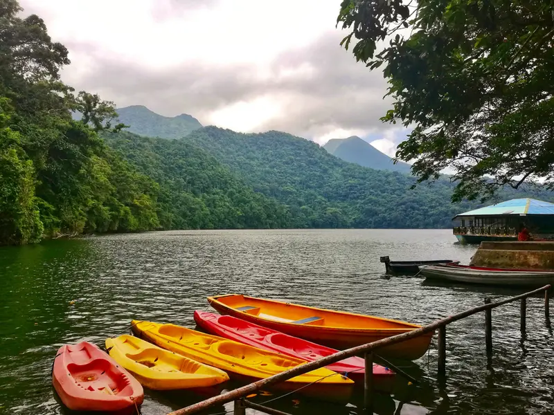

Highlands
Sorsogon's volcanic interior
The province's interior is dominated by the active Bulusan Volcano, rising to 1,565 metres — part of the Pacific Ring of Fire. Surrounding it, secondary cones and ridges create a landscape of dense rainforest, hidden crater lakes, and steaming fumaroles.
For hikers and outdoor enthusiasts, Sorsogon's mountains offer trails through primary forest, rewarding summits with coastal views, and the unique experience of trekking through an active volcanic landscape.

Featured
Bulusan Volcano Natural Park
The Bulusan Volcano Natural Park covers 3,673 hectares of protected old-growth forest. PHIVOLCS permanently monitors the volcano's activity. Inside the park:
- Bulusan Lake — scenic crater lake at the volcano's base
- Lake Bato — an older maar lake surrounded by forest
- San Benon Hot Spring — natural geothermal pools
- Buhang Hot Spring — secluded thermal baths in the forest
- Trekking trails to the summit (permit required)
Trekking Advisory
Always check PHIVOLCS' current alert level before trekking. Hire a registered local guide and obtain permits from the Protected Area Office in Irosin.
